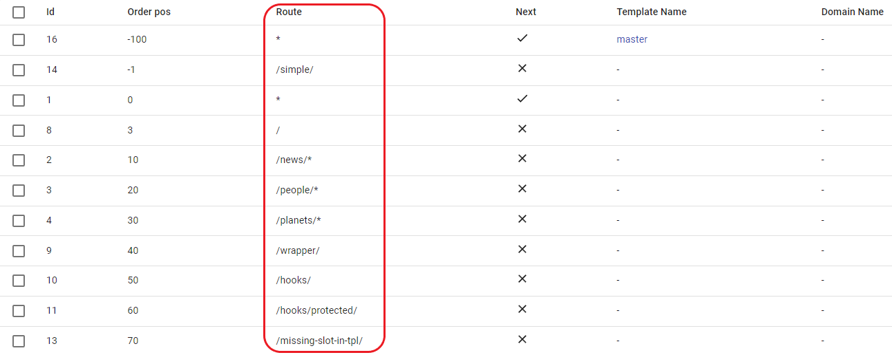
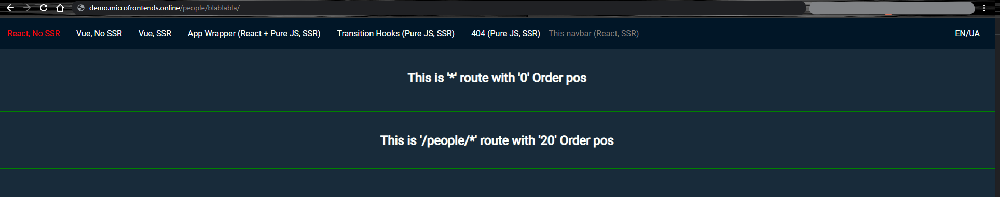

Route matching patterns⚓︎
Match and cascade merge⚓︎
Route field⚓︎

*- Matches any route./- Matches home page only./news/*- Matches/news/route and any subroute (for example,/news/blablabla)./wrapper/- Matches only/wrapper/route and ignores any subroute (for example,/wrapper/blablabla).
Important note
Route must be unique for each domain.
Exception is * - you can use the same order position, provided that the domain names are different.
Order field⚓︎

The order field is an integer value that specifies the order in which the fragments should be fetched when constructing pages. ILC goes through positions from lowest to highest.
To specify order position, you can use integer numbers (only) from -∞ to +∞ .
For more details, refer to the Examples section below.
Important note
Order positions must be unique for each domain.
You can use the same order position, provided that the domain names are different.
Next field⚓︎
The next field is a boolean value that instructs ILC on whether should it move further (true) through the list of applications, or stop (false) after rendering the current one.
Examples⚓︎
Prerequisites⚓︎
Before proceeding with the examples, ensure that your routing table looks as follows:

/wrapper/ route⚓︎
- After configuring your routing table, navigate to the
http://demo.microfrontends.online/wrapper/
ILC side:
- ILC starts with the application with the lowest
Order posvalue (in this case,-100). Its route is*, so it is rendered. TheNextfield is set totrue, so ILC goes further to the next route. - ILC moves further to position
Order pos -1. It does not render it because the/simple/route does not match the given one. - ILC moves further to position
Order pos 0. It renders this application because its route is*. TheNextfield is set totrue, so ILC goes further to the next route. - The applications with
Order pos3,10,20, and30are not rendered because their route does not match the specified one. TheNextfield is set totrue, so ILC goes further to the next route. - ILC moves further to position
Order pos 40. This is the exact match of the specified route. This application is rendered. TheNextfield is set tofalse, so ILС stops.
As a result, there are 3 rendered applications for both * routes and for /wrapper/ route.

Render a page with navbar only⚓︎
In this example, you will instruct ILC to render the navbar and skip rendering of the application at the Order pos 0 and route *. You will be working with the /wrapper/ example route.
To do this:
- Set the
Order posfor the/wrapper/route to any number between-100and0. For example,-2. - Make sure that the
Nextfield for the/wrapper/route is set tofalse.

Explanation
Since you want to skip rendering of the application that has the Order pos 0, considering that navbar has the Order pos -100, you need to define your /wrapper/ route at any place after the navbar but before the application (-100 < number < 0).
ILC side:
- ILC starts with the application with the lowest
Order posvalue (in this case,-100). Its route is*, so it is rendered. TheNextfield is set totrue, so ILC goes further to the next route. - ILC moves further to position
Order pos -2. It renders this application because it is a match. TheNextfield is set tofalse, so ILС stops.
/people/blablabla/ route⚓︎
Since ILC registry already contains the /people/* value, ILC renders both * and /people/* routes.

Conclusion⚓︎
As you can see from the examples above, Order pos can be used to flexibly manipulate the content you want to show.
A quick recap:
Let's say, you have a page with the following elements: application, sidebar, navbar, footer. To skip rendering of a particular element(s), change Order pos of your application accordingly. See the examples below:
-
footer:Order pos -1000 -
navbar:Order pos -100 -
sidebar:Order pos 0 -
application:Order pos 5
-
footer:Order pos -1000 -
navbar:Order pos -100 -
application:Order pos -50 -
sidebar:Order pos 0
-
footer:Order pos -1000 -
application:Order pos -200 -
navbar:Order pos -100 -
sidebar:Order pos 0
-
application:Order pos -1200 -
footer:Order pos -1000 -
navbar:Order pos -100 -
sidebar:Order pos 0